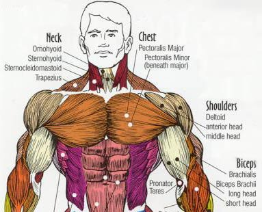

The chest or pectoralis muscle is a large flat, fan shaped muscle that covers the entire upper rib cage. It originates from attachments along our breast bone, collarbones, ribs, and it inserts on each side of your body via a large tendon through your shoulder joint to your upper arm bone.
It is essential that when you do any exercise that you perform the movements correctly, if you don't you will receive less then optimum benefit from the exercise. It is very difficult to unlearn bad exercise habits, so it is best to learn the right exercise technique from the very start. For each chest workout pick 3 of these exercises and do 4-5 sets (including warm up sets) for each exercise. You can vary the exercises you do for each chest workout.
This is a great upper body exercise. It works the entire pectoral area, deltoids, and triceps. Secondary stress is applied to the latissimus dorsi muscles, biceps, and forearms to help stabilize and balance the barbell.
Place a barbell on the rack of a bench pressing bench. Lie back on the bench. Place your feet flat on the floor on each side of the bench. Grab the bar just a bit wider then shoulder width. Straighten your arms to lift the barbell off the rack. Position the bar so it is at arms length over your chest.
Lower the barbell until it touches your chest. As you lower the bar keep your elbows tucked so that your upper arms are at a 45-degree angles to the sides of your body. Do not let your upper arms go straight out to the sides because it will place too much strain on your shoulder joints. With out bouncing the bar off your chest push the bar up until it is back to the starting position. Repeat.
Tips - you should always have a training partner spot you when doing the bench press, just in case you need help lifting the barbell off your chest. For variety you can do this exercise with dumbbells instead of a barbell.
This is very similar to the bench press, it works the same muscle groups (i.e. pectorals, deltoids, and triceps). Except the incline bench press works more of the upper chest.
Lie back on an incline bench pressing bench. Place your feet flat on the floor on each side of the bench. Grab the bar just a bit wider then shoulder width. Straighten your arms to lift the barbell off the rack. Position the bar so it is at arms length over you upper chest. Lower the barbell until it touches your upper chest. As you lower the bar keep your elbows tucked so that your upper arms are at a 45-degree angles to the sides of your body. Do not let your upper arms go straight out to the sides because it will place too much strain on your shoulder joints. With out bouncing the bar off your chest push the bar up until it is back to the starting position. Repeat. Tips - you should always have a training partner spot you when doing the incline bench press, just in case you need help lifting the barbell off your chest. For variety you can do this exercise with dumbbells instead of a barbell.
This is very similar to the bench press, it works the same muscle groups (i.e. pectorals, deltoids, and triceps). Except the decline bench press works more of the lower chest.
Lie back on a decline bench pressing bench. Hook your feet in the foot pads on the end of the bench. Grab the bar just a bit wider then shoulder width. Straighten your arms to lift the barbell off the rack. Position the bar so it is at arms length over you lower chest. Lower the barbell until it touches your lower chest. As you lower the bar keep your elbows tucked so that your upper arms are at a 45-degree angles to the sides of your body. Do not let your upper arms go straight out to the sides because it will place too much strain on your shoulder joints. With out bouncing the bar off your chest push the bar up until it is back to the starting position. Repeat. Tips - you should always have a training partner spot you when doing the decline bench press, just in case you need help lifting the barbell off your chest. For variety you can do this exercise with dumbbells instead of a barbell.
This exercise works the entire chest area, but it emphasizes the lower chest. It also works the deltoids and triceps.
Grab a pair of parallel bars so the palms of your hands are facing each other. Straighten your arms and bend your knees. Support yourself between the bars. Lean your torso forward as you do the exercise. Slowly bend your arms and lower your body between the bars until your elbows are at 90-degree angles. Hold this stretched position for a second. Steadily push yourself back up to the starting position. Repeat. Note: this is an advanced exercise because you have to be able to lift your entire bodyweight. As you get stronger you can add extra weight to the exercise by hanging weights from your waist using a weight belt.
This exercise works the entire chest area, but you can target specific areas of your chest depending on the angle of the bench. For example, a flat bench will target the entire chest, an incline bench will target the upper chest, and a decline bench will target the lower chest.
Grab 2 dumbbells and lie back on a bench. You may want to have a training partner hand the dumbbells to you to make it easier to get into position. Extend your arms straight above chest with the palms of your hands facing each other. Keep a slight bend in your elbows. Without bending your arms, slowly lower the dumbbells in semicircular arcs until they are level with your shoulders. Do not overemphasize the stretch at the bottom of the rep because you could injure your shoulder joints. Using your chest strength bring your arms back together in semicircular arcs. Repeat.
This exercise isolates the entire pectoral complex.
Adjust the seat to a height that places your upper arms parallel with the floor when you are seated. Sit down and grab the handles of the machine, keep a slight bend in the elbows. Allow the weight of the machine to pull your arms back to stretch your chest. Using your chest strength bring your arms together in an arc motion until your hands touch in front of your chest. Hold this position for a couple of seconds to maximize the peak contraction in the chest. Slowly move your elbows back to the starting position. Repeat.
This is a basic exercise that works the entire chest area. Secondary stress is placed on the shoulders and triceps.
Lie face down on the floor. Place your hands palms down on each side of your body. Keeping your legs and torso in a straight line push yourself up and support your upper body on your arms. Slowly lower yourself until your chest is about an inch from the floor. Hold this stretched position for a second. Push yourself back up to the starting position. Repeat. This is a good exercise to use either as a warm up to your chest exercises or as a finishing exercise to really pump up your chest.